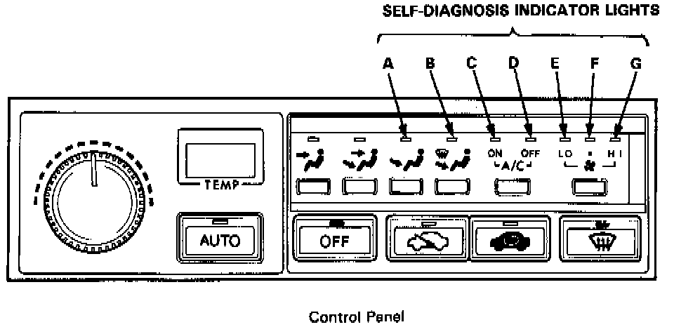

Self-Diagnosis Indicators - Automatic Climate Control - Coupe
SELF-DIAGNOSIS INDICATORSThe Automatic Climate Control System has a built-in self-diagnosis feature.

If a problem is suspected, turn the ignition switch OFF for at least one minute. Then turn the ignition switch ON and push both the AUTO and OFF buttons on the control panel at the same time. Any problems in circuits A - G will be indicated by the respective LED coming on.
The climate control unit does not memorize the Self -diagnosis indicator lights. If the ignition switch is turned OFF for approximately one minute or more, the indicator light memory will be lost.
NOTE:
- Before replacing any component, recheck that all connector terminals and wires are secure.
- The term "Intermittent Failure" means a system may have had a failure, but it checks out OK through all your tests. You may need to road test the car to reproduce the failure, or, if the problem was a loose connection, you may have unknowingly solved it while doing the tests.